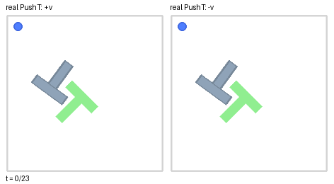
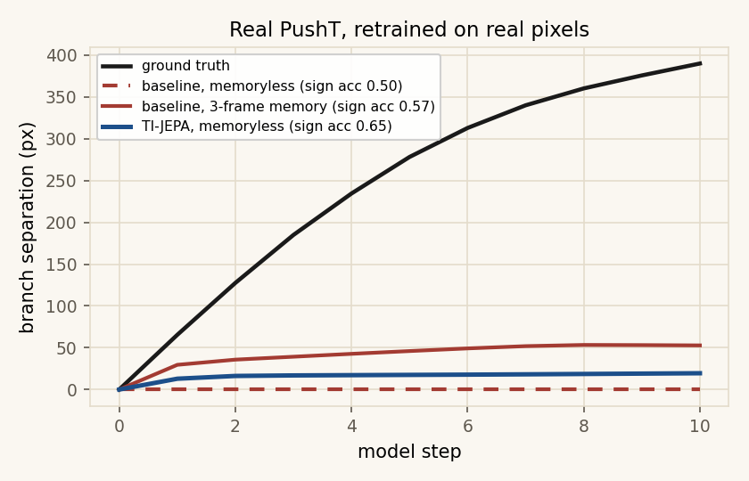
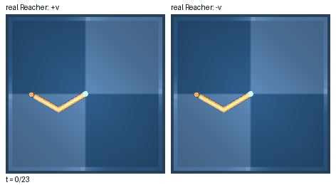
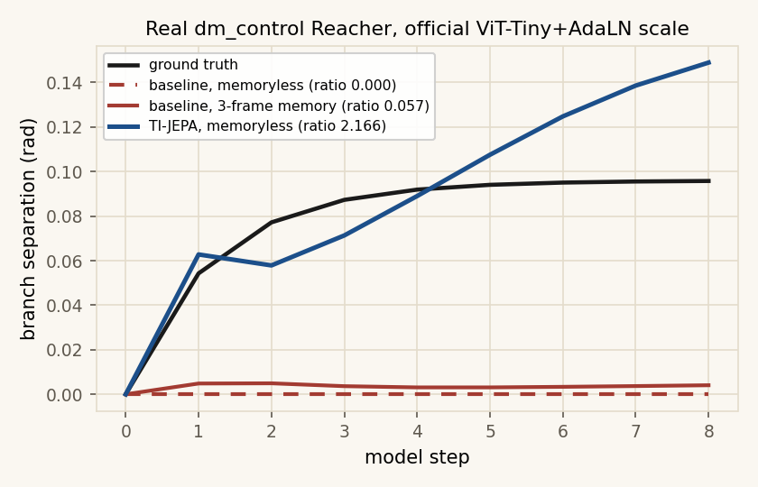

The target is the state
Whatever the loss predicts is what later planning is allowed to know. A next-frame embedding leaves velocity outside that state. Pose and motion, predicted together, put it back in.
TI-JEPA · world models
A next-frame JEPA predicts the embedding of the next frame from the current embedding and the action. A renderer without motion blur draws configuration only. The embedding of one frame is a function of configuration, so no encoder, however large, can read instantaneous velocity out of it. TI-JEPA makes one small, checkable change: split the latent into a pose code and an explicit motion code, and predict both.
01 · One real case
This is one pair from the trained Pendulum models, the same construction as the paper’s kill experiment. At the first step the two renderings match. The memoryless model then emits one rollout for both. TI-JEPA follows the two directions the physics actually takes.
02 · Every environment
Choose an environment. Each player is another real pair from that environment’s trained models: ground truth, the memoryless baseline, and TI-JEPA.
03 · Two real benchmarks
InertiaBall, Pendulum, and CartPole are built so velocity isn't optional. PushT and Reacher are real benchmarks that already have official pretrained checkpoints. We retrained the memoryless baseline and TI-JEPA on real pixels from both, same budget, and reran the exact same kill experiment.




04 · What this changes
Whatever the loss predicts is what later planning is allowed to know. A next-frame embedding leaves velocity outside that state. Pose and motion, predicted together, put it back in.
The motion code is a bias-free finite difference. Identical frames give exactly zero. A probe can read pose and speed separately, and a planner can ask for arrival with no leftover speed.
Control that catches, swings, or comes to rest needs the rate of change in the object being predicted. That is a change to the target, and it travels with any encoder large enough to see the scene.